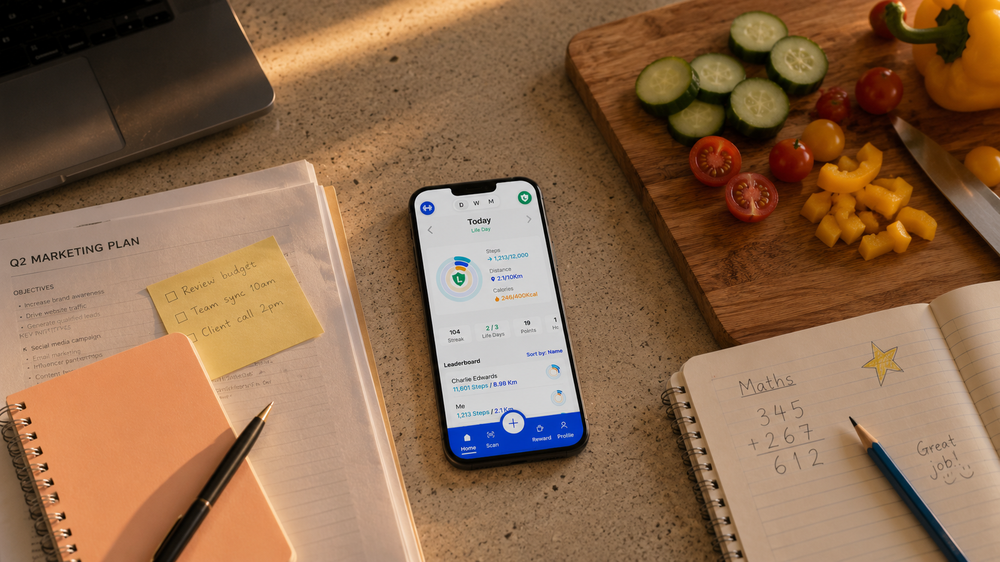

An end-to-end behaviour change product for healthcare client PrimeCare. Most habit-tracking apps punish users for missing days. HabitHero was designed to do the opposite.

PrimeCare needed a digital product to help patients build sustainable health habits - tracking steps, distance, and calories across daily, weekly, and monthly views. The challenge wasn't building a tracker. It was building one that people would stick with.
Before designing anything, I conducted user interviews and competitive analysis with PrimeCare's patient group - people managing long-term health conditions who needed sustainable behaviour change, not gamified pressure.
"I gave up after missing two days. There didn't seem to be any point carrying on." - Research participant
Missing a day broke streaks - the single biggest trigger for app abandonment in every product tested.
Users could only see what they'd missed, never how far they'd come. Motivation collapsed as a result.
Bad days - illness, family, travel - weren't accommodated by any existing solution. Life was treated as failure.
Time-pressured professional managing a long-term health condition
Alex was built from the interview data, not invented before it. Every goal and frustration below came directly from research participants who shared Alex's core situation: motivated to build a habit, but not on the terms most tracking apps demand.
"I don't need another thing telling me I've failed." - Alex, persona quote drawn from research
The defining feature of HabitHero emerged directly from research. Users didn't need more motivation - they needed permission to have a bad day without losing everything they'd built.
A Life Day acts as a shield. When life gets in the way, a user logs a Life Day instead of a missed day. Their streak is preserved. Their progress is protected. They come back tomorrow instead of giving up entirely.
Life Days are earned, not given - 3 per month for every 10 consecutive days tracked. Compassion built on responsibility.
Mapping Alex's journey through a typical existing habit app showed exactly where the emotional damage happened, and confirmed Life Day as the point to intervene.
Alex tracks daily, streak climbing, feeling good about the habit.
Illness, travel, or a hard week at work. The habit slips for a day.
The app registers a failure. No distinction between "gave up" and "had a bad day."
Motivation collapses. Alex deletes the app rather than face restarting from zero.
Illness, travel, or a hard week. Nothing about Alex's life has changed.
Instead of a missed day, Alex marks it as a Life Day. The streak holds.
The product acknowledges real life instead of punishing it.
Progress feels intact, so Alex comes straight back the next day.
Synthesis surfaced three core flows that the design needed to support without adding complexity for the majority of users following the simplest path.
Open app, log today's activity, see progress, done.
Open app, mark today as a Life Day, streak preserved, reassurance screen.
Open app, select a past date, log activity or Life Day, weekly view updates.
Before any screens existed, this storyboard was used to align stakeholders around the emotional arc Life Day needed to deliver.
A migraine rules out any activity today. The habit is already at risk.
Expecting bad news, but checking in out of habit.
A visible, judgement-free alternative to logging a miss.
Streak protected. A short, warm confirmation screen appears.
No restart, no guilt. Alex picks the habit straight back up.
User interviews, competitive analysis, and stakeholder sessions to define the problem space. Created a primary persona - Alex, a time-pressured professional managing a long-term health condition - and mapped the emotional journey of current habit tracking products.
Affinity mapping and How Might We sessions in Miro to cluster insights and define the core user flows - happy path, Life Day path, and retroactive multi-day logging.
Paper prototypes and low-fidelity sketches across the core screens - onboarding, daily dashboard, weekly view, monthly calendar, and the Life Day flow - before committing to any visual direction.
In-person testing with 5 participants on the lo-fi prototype. Key findings: the Life Day concept needed clearer onboarding explanation; the leaderboard created anxiety for some users; the initial onboarding flow was too long.
Iterated based on Round 1 findings. Simplified onboarding to 3 screens. Redesigned the Life Day prompt to appear contextually. Made the leaderboard opt-in. Tightened information hierarchy across all views.
In-person testing on mid-fi prototype. Validated the simplified onboarding and contextual Life Day prompt. Identified issues with the weekly bar chart - users couldn't distinguish Life Day entries from missed days at a glance.
Built a structured Figma design system covering typography, colour, spacing tokens, and component states. Designed all 20+ screens to WCAG 2.1 AA standard, with Figma Motion used for key micro-interactions and transitions.
Final in-person testing on the high-fidelity Figma prototype. All core flows validated. Life Day feature unanimously understood and valued. Prototype signed off for development handoff using Figma Dev Mode.
Five in-person sessions on the paper prototype, run before any visual design decisions were locked in.
Life Day concept needed clearer explanation during onboarding. Three of five participants asked what happens if they used it wrong.
Leaderboard created anxiety for two participants managing health conditions privately.
Onboarding ran to 6 screens. Every participant tried to skip past screen 3.
Changes from Round 1 went straight into a mid-fidelity prototype, tested with a fresh set of participants to check the fixes actually worked.
Simplified 3-screen onboarding was understood immediately. No participant asked what Life Day meant.
Opt-in leaderboard removed the anxiety flagged in Round 1. Two participants opted in anyway.
New issue surfaced: the weekly bar chart didn't visually distinguish a Life Day from a missed day at a glance.
The validated flows moved into a full Figma design system, built to WCAG 2.1 AA across all 20+ screens.
Today's status, streak, and quick Life Day access.
Life Days and missed days now visually distinct, fixing the Round 2 finding.
Long-view progress, built to reassure rather than pressure.
Typography, colour, spacing tokens, and component states.
Three rounds of in-person usability testing validated HabitHero's core flows and confirmed that the Life Day feature was both understood and valued by users. The prototype was handed off to development via Figma Dev Mode.
"This actually makes me want to come back tomorrow." - Usability testing participant, Round 3